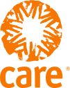
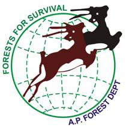
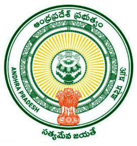
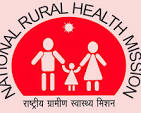
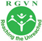
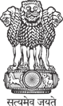

Major Projects Implemented


Focused on holistic rural development through Institution Building and Capacity Building for Community-Based Organizations, implementing watershed programs and food security.
Livelihood
Empowered local communities by forming Vana Samrakshana Samities (VSS), providing training on Non-Timber Forest Produce (NTFP), and constructing check dams.
Livelihood
Conducted extensive Health, Hygiene, and Sanitation programs, including capacity building for local committees and awareness campaigns on safe drinking water.
Health
Organized capacity-building programs for Water User Associations, oversaw the rejuvenation of irrigation tanks, and developed agricultural technologies.
Livelihood
Delivered essential primary and preventive healthcare services directly to remote and interior tribal villages through mobile clinics.
HealthExecuted widespread Information, Education, and Communication (IEC) activities and awareness programs in public gatherings to combat Tuberculosis.
Health
Provided crucial livelihood enhancement for the poor by offering financial assistance for Below Poverty Line (BPL) families through Income Generation activities.
Livelihood
Offered end-to-end support for persons with disabilities, including surveys, identification, rehabilitation, counselling, and the distribution of necessary aids.
Health